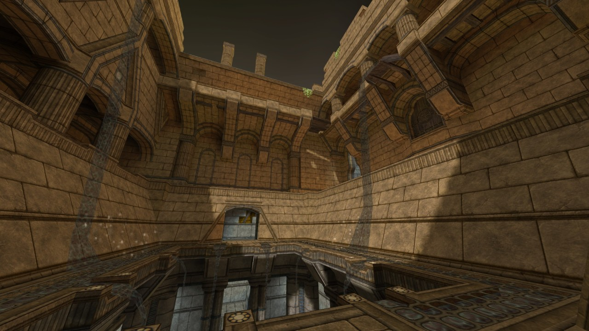
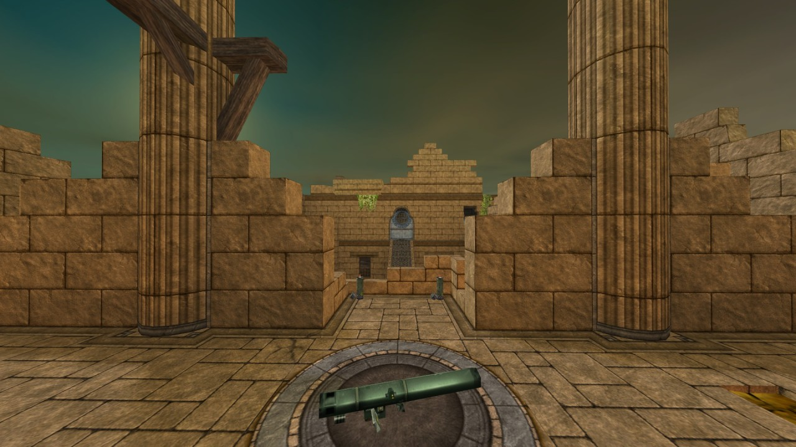
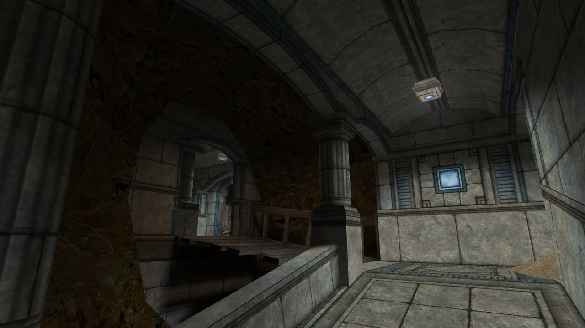
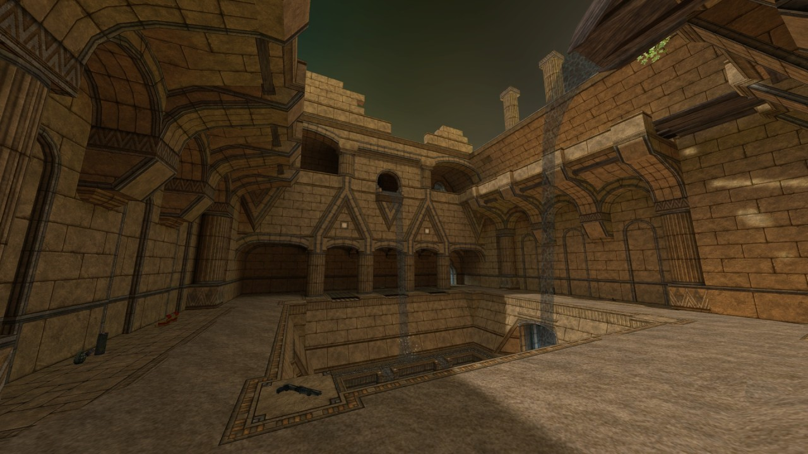

Hey, did you know I also make things? It’s true! I made this thing, right here:

Map description:
“No. No, it’s not Cloister. It’s me, it’s Lister! It’s Lister the Stupid!” – Dave Lister, Red Dwarf Series I Episode IV, “Waiting for God”
A remake/rebuild/re-whatever of Cloister, a deathmatch map created by the Half-Life writer, Marc Laidlaw.
Cloister was never officially released but was retrieved (partially) from the leaked WC map pack, albeit not in an entirely playable state. As a self-acknowledged maker of monumentally poor decisions, I set about reconstructing the map and bringing it up to a higher standard of aesthetic quality, while preserving its play space to as reasonable an extent as possible. Marc seems understandably bemused as to why I’d pour my time into this, but as far as I can tell, the project has his approval–or at least, his world-weary tolerance.
Play is likely to be ideal with between 2 and 8 players, as the map is somewhat cramped and there aren’t many safe places to spawn. All weapons make an appearance except the egon (because I’m a bitter soul). I’ve made an effort to minimize changes to the layout, but item spawns were largely just chosen by me based on whatever I felt would be best.
(The r_speeds are, of course, abysmal. I sort of went into this project knowing that I wouldn’t be able to restrain myself. It’s 2017 anyway, come on now)